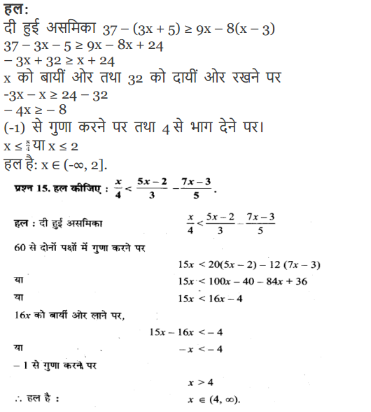
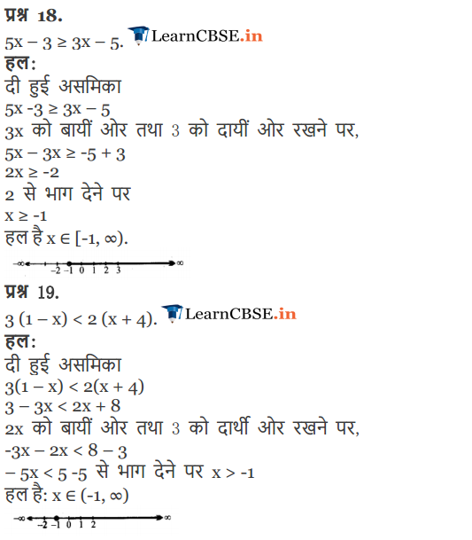
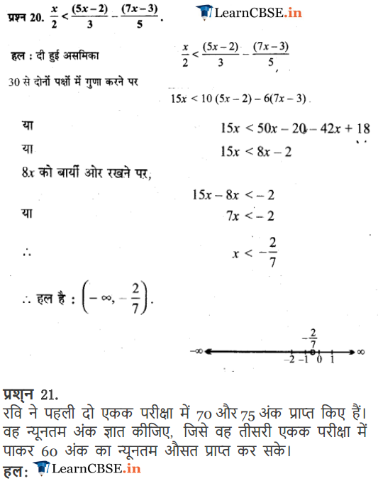

Linear Inequalities Class 11 Maths NCERT Solutions are extremely helpful while doing your homework. NCERT Solutions for Class 11 Maths Chapter 6 Linear Inequalities All Exercises were prepared by Experienced LearnCBSE.in Teachers.
Free download NCERT Solutions for Class 11 Maths Chapter 6 Linear Inequalities Ex 6.1, Ex 6.2, Ex 6.3 and Miscellaneous Exercise PDF in Hindi Medium as well as in English Medium for CBSE, Uttarakhand, Bihar, MP Board, Gujarat Board, BIE, Intermediate and UP Board students, who are using NCERT Books based on updated CBSE Syllabus for the session 2019-20.
- Linear Inequalities Class 11 Ex 6.1
- Linear Inequalities Class 11 Ex 6.2
- Linear Inequalities Class 11 Ex 6.3
- Linear Inequalities Class 11 Miscellaneous Exercise
- रैखिक असमिकाएँ प्रश्नावली 6.1 का हल हिंदी में
- रैखिक असमिकाएँ प्रश्नावली 6.2 का हल हिंदी में
- रैखिक असमिकाएँ प्रश्नावली 6.3 का हल हिंदी में
- रैखिक असमिकाएँ विविध प्रश्नावली का हल हिंदी में
- NCERT Exemplar Class 11 Maths Linear Inequalities
- Class 11 Maths Linear Inequalities Notes
NCERT Solutions for Class 11 Maths Chapter 6 Linear Inequalities
Topics and Sub Topics in Class 11 Maths Chapter 6 Linear Inequalities:
| Section Name | Topic Name |
| 6 | Linear Inequalities |
| 6.1 | Introduction |
| 6.2 | Inequalities |
| 6.3 | Algebraic Solutions of Linear Inequalities in One Variable and their Graphical Representation |
| 6.4 | Graphical Solution of Linear Inequalities in Two Variables |
| 6.5 | Solution of System of Linear Inequalities in Two Variables |
NCERT Solutions for Class 11 Maths Chapter 6 Exercise 6.1
Ex 6.1 Class 6 Maths Question 1:
Ans:
Ex 6.1 Class 6 Maths Question 2:
Ans:
More Resources for CBSE Class 11
- NCERT Solutions
- NCERT Solutions Class 11 Maths
- NCERT Solutions Class 11 Physics
- NCERT Solutions Class 11 Chemistry
- NCERT Solutions Class 11 Biology
- NCERT Solutions Class 11 Hindi
- NCERT Solutions Class 11 English
- NCERT Solutions Class 11 Business Studies
- NCERT Solutions Class 11 Accountancy
- NCERT Solutions Class 11 Psychology
- NCERT Solutions Class 11 Entrepreneurship
- NCERT Solutions Class 11 Indian Economic Development
- NCERT Solutions Class 11 Computer Science
Ex 6.1 Class 6 Maths Question 3:
Ans:
Ex 6.1 Class 6 Maths Question 4:
Ans:
Ex 6.1 Class 6 Maths Question 5:

Ans:
Ex 6.1 Class 6 Maths Question 6:

Ans:
Ex 6.1 Class 6 Maths Question 7:
Ans:
Ex 6.1 Class 6 Maths Question 8:
Ans:
Ex 6.1 Class 6 Maths Question 9:
Ans:
Ex 6.1 Class 6 Maths Question 10:

Ans:
Ex 6.1 Class 6 Maths Question 11:
Ans:
Ex 6.1 Class 6 Maths Question 12:
Ans:
Ex 6.1 Class 6 Maths Question 13:
Ans:
Ex 6.1 Class 6 Maths Question 14:
Ans:
Ex 6.1 Class 6 Maths Question 15:
Ans:
Ex 6.1 Class 6 Maths Question 16:
Ans:
Ex 6.1 Class 6 Maths Question 17:
Ans:
Ex 6.1 Class 6 Maths Question 18:
Ans:
Ex 6.1 Class 6 Maths Question 19:
Ans:

Ex 6.1 Class 6 Maths Question 20:
Ans:
Ex 6.1 Class 6 Maths Question 21:
Ans:
Ex 6.1 Class 6 Maths Question 22:
Ans:
Ex 6.1 Class 6 Maths Question 23:
Ans:
Ex 6.1 Class 6 Maths Question 24:
Ans:
Ex 6.1 Class 6 Maths Question 25:
Ans:
Ex 6.1 Class 6 Maths Question 26:
Ans:

NCERT Solutions for Class 11 Maths Chapter 6 Linear Inequalities (रैखिक असमिकाएँ) Hindi medium Ex 6.1




NCERT Solutions for Class 11 Maths Chapter 6 Exercise 6.2
Ex 6.2 Class 11 Maths Question 1:
Ans:
Ex 6.2 Class 11 Maths Question 2:
Ans:
Ex 6.2 Class 11 Maths Question 3:
Ans:
Ex 6.2 Class 11 Maths Question 4:
Ans:

Ex 6.2 Class 11 Maths Question 5:
Ans:

Ex 6.2 Class 11 Maths Question 6:
Ans:
Ex 6.2 Class 11 Maths Question 7:
Ans:
Ex 6.2 Class 11 Maths Question 8:
Ans:
Ex 6.2 Class 11 Maths Question 9:
Ans:
Ex 6.2 Class 11 Maths Question 10:
Ans:
NCERT Solutions for Class 11 Maths Chapter 6 Exercise 6.3
Ex 6.3 Class 11 Maths Question 1:
Ans:
Ex 6.3 Class 11 Maths Question 2:
Ans:
Ex 6.3 Class 11 Maths Question 3:
Ans:
Ex 6.3 Class 11 Maths Question 4:
Ans:
Ex 6.3 Class 11 Maths Question 5:
Ans:
Ex 6.3 Class 11 Maths Question 6:
Ans:
Ex 6.3 Class 11 Maths Question 7:
Ans:

Ex 6.3 Class 11 Maths Question 8:

Ans:

Ex 6.3 Class 11 Maths Question 9:
Ans:

Ex 6.3 Class 11 Maths Question 10:
Ans:

Ex 6.3 Class 11 Maths Question 11:
Ans:
Ex 6.3 Class 11 Maths Question 12:

Ans:
Ex 6.3 Class 11 Maths Question 13:

Ans:
Ex 6.3 Class 11 Maths Question 14:
Ans:
Ex 6.3 Class 11 Maths Question 15:
Ans:
NCERT Solutions for Class 11 Maths Chapter 6 Miscellaneous Solutions
Miscellaneous Exercise Class 11 Maths Question 1:
Ans:
Miscellaneous Exercise Class 11 Maths Question 2:
Ans:
Miscellaneous Exercise Class 11 Maths Question 3:
Ans:

Miscellaneous Exercise Class 11 Maths Question 4:
Ans:
Miscellaneous Exercise Class 11 Maths Question 5:
Ans:
Miscellaneous Exercise Class 11 Maths Question 6:
Ans:
Miscellaneous Exercise Class 11 Maths Question 7:
Ans:
Miscellaneous Exercise Class 11 Maths Question 8:
Ans:
Miscellaneous Exercise Class 11 Maths Question 9:
Ans:
Miscellaneous Exercise Class 11 Maths Question 10:
Ans:

Miscellaneous Exercise Class 11 Maths Question 11:
Ans:
Miscellaneous Exercise Class 11 Maths Question 12:
Ans:
Miscellaneous Exercise Class 11 Maths Question 13:
Ans:
Miscellaneous Exercise Class 11 Maths Question 14:
Ans:
NCERT Solutions for Class 11 Maths Chapter 6 .1 Linear Inequalities Ex 6 in Hindi
Ex 6.1 Class 11 Maths प्रश्न 1.
हल कीजिए : 24x < 100, जब
(i) x एक प्राकृत संख्या है।
(ii) x एक पूर्णांक है। 24x < 100
हल:
24x < 100
24 से दोनों पक्षों में भाग करने पर
x < \(\frac { 100 }{ 24 }\) अर्थात x < \(\frac { 25 }{ 6 }\)
(i) यदि x एक प्राकृत संख्या है तो हल {1, 2, 3, 4} है।
(ii) यदि x एक पूर्णांक संख्या है तो हल {…. -3, -2, -1, 0, 1, 2, 3, 4}.
Ex 6.1 Class 11 Maths प्रश्न 2.
हल कीजिए: 12x > 30, जब
(i) x एक प्राकृत संख्या है।
(ii) x एक पूर्णाक है।
हल:
– 12x > 30
-12 से दोनों पक्षों में भाग करने पर,
x < \(\frac { 30 }{ -12 }\) अर्थात x < \(\frac { -5 }{ 2 }\)
(i) यदि x प्राकृत संख्या है तो कोई हल नहीं है।
(ii) यदि x पूर्णाक संख्या है तो हल {….. -5, -4, -3} है।
Ex 6.1 Class 11 Maths प्रश्न 3.
हल कीजिए : 5x – 3 < 7, जब
(i) x एक पूर्णाक है।
(ii) x एक वास्तविक संख्या है।
हल:
5x – 3 < 7
दोनों पक्षों में 3 जोड़ने पर,
5x < 10
5 से भाग देने पर
x < \(\frac { 10 }{ 5 }\)
अर्थात x < 2
(i) यदि x एक पूर्णांक संख्या है तो हल {…. -2, -1, 0, 1}.
(ii) यदि x एक वास्तविक संख्या है तो हल x ∈ (-∞, 2).
Ex 6.1 Class 11 Maths प्रश्न 4.
हल कीजिए : 3x + 8 > 2, जब
(i) x एक पूर्णाक है।
(ii) एक वास्तविक संख्या है।
हल:
3x + 8 > 2
3x > 2 – 8 या 3x > -6 .
3 से भाग करने पर
x > \(\frac { -6 }{ 3 }\) या x > -2
(i) यदि x एक पूर्णांक संख्या है तो हल {-1, 0, 1, 2,….}.
(ii) यदि x एक वास्तविक संख्या है तो हल x ∈ (-2, ∞).
Ex 6.1 Class 11 Maths प्रश्न 5.
हल कीजिए : 4x + 3 < 6x + 7.
हल:
4x + 3 < 6x + 7
6x को बाएँ पक्ष में तथा 3 को दाएँ पक्ष में रखने पर,
4x – 6x < 7 – 3,
-2x < 4 -2 से भाग देने पर, x > \(\frac { 4 }{ -2 }\) या x > -2
दी हुई असमिका का हल है: x = (-2, ∞).
Ex 6.1 Class 11 Maths प्रश्न 6.
हल कीजिए : 3x – 7 > 5x – 1
हल:
3x -7 > 5x – 1
5x को बाएँ पक्ष में और 7 को दाएँ पक्ष में रखने पर,
3x – 5x > -1 + 7
या
-2x > 6
-2x से भाग देने पर।
x < -3
दी हुई असमिका का हल है x ∈ (-∞, – 3).
Ex 6.1 Class 11 Maths प्रश्न 7.
हल कीजिए : 3(x – 1) ≤ 2 (x – 3).
हल:
असमिका
3(x – 1) ≤ 2 (x – 3)
3x – 3 ≤ 2x – 6
2x को बाएँ पक्ष में और 3 को दाएँ पक्ष में रखने पर,
3x – 2 ≤ 3 – 6
x < – 3
हल है : x ∈ (-∞, – 3].
Ex 6.1 Class 11 Maths प्रश्न 8.
हल कीजिए : 3 (2 – x) ≥ 2 (1 – x).
हल:
दी हुई असमिका 3(2 – x) ≥ 2 (1 – x)
6 – 3x ≥ 2 – 2x
2x को बायीं ओर तथा 6 को दायीं ओर रखने पर,
2x – 3x ≥ 2 – 6
या
-x ≥ -4 या x ≤ 4
हल है : x ∈ (-∞, 4]

Ex 6.1 Class 11 Maths प्रश्न 13.
हल कीजिए : 2 (2x + 3) – 10 < 6 (x – 2)
हल:
दी हुई असमिका 2 (2x + 3) – 10 < 6 (x – 2)
4x + 6 – 10 < 6x – 12
6x को बायीं ओर तथा -4 को दार्थी ओर रखने पर,
4 – 6x < -12 + 4
-2x < -8 (-1) से गुणा करने पर, x > 4
हल है :
x ∈ (4, ∞)
Ex 6.1 Class 11 Maths प्रश्न 14.
हल कीजिए : 37 – (3x + 5) ≥ 9x – 8(x – 3).
हल:
दी हुई असमिका 37 – (3x + 5) ≥ 9x – 8(x – 3)
37 – 3x – 5 ≥ 9x – 8x + 24
– 3x + 32 ≥ x + 24
x को बायीं ओर तथा 32 को दायीं ओर रखने पर
-3x – x ≥ 24 – 32
– 4x ≥ – 8
(-1) से गुणा करने पर तथा 4 से भाग देने पर।
x ≤ \(\frac { 8 }{ 4 }\) या x ≤ 2
हल है: x ∈ (-∞, 2].
प्रश्न 17 से 20 तक की असमिकाओं को हल ज्ञात कीजिए तथा उन्हें संख्या रेखा पर आलेञ्चित कीजिए।
Ex 6.1 Class 11 Maths प्रश्न 17.
3x – 2 < 2x + 1
हल:
दी हुई असमिका . 3x – 2 < 2x + 1
2x को बायीं ओर तथा 2 को दायीं ओर रखने पर,
3x – 2x < 1 + 2
x < 3
हल है : x ∈ (-∞, 3).
Ex 6.1 Class 11 Maths प्रश्न 18.
5x – 3 ≥ 3x – 5.
हल:
दी हुई असमिका
5x -3 ≥ 3x – 5
3x को बायीं ओर तथा 3 को दायीं ओर रखने पर,
5x – 3x ≥ -5 + 3
2x ≥ -2
2 से भाग देने पर
x ≥ -1
हल है x ∈ [-1, ∞).
Ex 6.1 Class 11 Maths प्रश्न 19.
3 (1 – x) < 2 (x + 4).
हल:
दी हुई असमिका
3(1 – x) < 2(x + 4)
3 – 3x < 2x + 8
2x को बायीं ओर तथा 3 को दार्थी ओर रखने पर,
-3x – 2x < 8 – 3
– 5x < 5 -5 से भाग देने पर x > -1
हल है: x ∈ (-1, ∞)

Ex 6.1 Class 11 Maths प्रश्न 21.
रवि ने पहली दो एकक परीक्षा में 70 और 75 अंक प्राप्त किए हैं। वह न्यूनतम अंक ज्ञात कीजिए, जिसे वह तीसरी एकक परीक्षा में पाकर 60 अंक का न्यूनतम औसत प्राप्त कर सके।
हल:
मान लीजिए तीसरे एकक परीक्षा में x अंक प्राप्त किए।
Ex 6.1 Class 11 Maths प्रश्न 22.
किसी पाठ्यक्रम में ग्रेड A पाने के लिए एक व्यक्ति को सभी पाँच परीक्षाओं (प्रत्येक 100 अंकों में से) में 90 अंक या अधिक अंक का औसत प्राप्त करना चाहिए यदि सुनीता के प्रथम चार परीक्षाओं के प्राप्तांक 87, 92, 94 और 95 हों तो वह न्यूनतम अंक ज्ञात कीजिए जिसे पांचवीं परीक्षा में प्राप्त करके सुनीता उस पाठ्यक्रम में ग्रेड A पाएगी।
Ex 6.1 Class 11 Maths प्रश्न 23.
10 से कम क्रमागत विषम संख्याओं के ऐसे युग्म ज्ञात कीजिए जिनके योगफल 11 से अधिक हों।
हल:
मान लीजिए x और x + 2 दो विषम परिमेय संख्याएँ हैं।
x तथा x + 2 दोनों ही 10 से कम हैं।
⇒ x < 10 और x + 2 < 10 या x < 8 दोनों का योगं 11 से अधिक है। x + (x + 2) > 11
2x + 2 > 11 या 2x > 11 – 2
2x > 9 या x > \(\frac { 9 }{ 2 }\) या x > 4\(\frac { 1 }{ 2 }\)
अर्थात् यदि x = 5 हो, तब दूसरी संख्या = x + 2 = 7
इसी प्रकार यदि x = 7, तो x + 2 = 9
दूसरा युग्म (7, 9)
x = 9 नहीं हो सकता क्योंकि x + 2 = 11 > 10
अत: वांछित युग्म है (5, 7), 7, 9).
Ex 6.1 Class 11 Maths प्रश्न 24.
क्रमागत सर्म संख्याओं के ऐसे युग्म ज्ञात कीजिए जिनमें से प्रत्येक 5 से बड़े हों, तथा उनका योगफल 23 से कम हो।
हल:
मान लीजिए x और x + 2 दो सम संख्याएँ हैं।
x और x + 2 दोनों ही 5 से बड़ी है।
⇒ x > 5
x + (x + 2) < 23
2x + 2 < 23
2x < 23 – 2 = 21
2x < 21 या x < \(\frac { 21 }{ 2 }\)
यदि x = 10, x + 2 = 12 ⇒ x + (x + 2) < 23
इसी प्रकार (6, 8), (8, 10) युग्म भी दी हुई शर्त पूरी करते हैं। वांछित युग्म (6, 8), (8, 10), (10, 12).
Ex 6.1 Class 11 Maths प्रश्न 25.
एक त्रिभुज की सबसे बड़ी भुजा सबसे छोटी भुजा की तीन गुनी है तथा त्रिभुज की तीसरी भुजा सबसे बड़ी भुजा से 2 सेमी कम है। तीसरी भुजा की न्यूनतम लंबाई ज्ञात कीजिए जबकि त्रिभुज का परिमाप न्यूनतम 61 सेमी है।
हल:
मान लीजिए त्रिभुज की सबसे छोटी भुजा = x सेमी
सबसे बड़ी भुजा = 3x सेमी
तीसरी भुजा = 3x – 2 सेमी
प्रश्नानुसार
x + 3x + (3x – 2) ≥ 61
7x – 2 ≥ 61
7x ≥ 61 + 2 = 63
x ≥ 9
सबसे छोटी भुजा 9 सेमी है।
Ex 6.1 Class 11 Maths प्रश्न 26.
एक व्यक्ति 91 सेमी लंबे बोर्ड में से तीन लंबाईयाँ काटना चाहता है। दूसरी लंबाई सबसे छोटी लंबाई से 3 सेमी अधिक और तीसरी लंबाई सबसे छोटी लंबाई की दूनी है। सबसे छोटे बोर्ड की संभावित लंबाई क्या है, यदि तीसरा टुकड़ा दूसरे टुकड़े से कम से कम 5 सेमी अधिक लंबा हो ?
हल:
मान लीजिए कटे हुए सबसे छोटे बोर्ड की लंबाई = x सेमी
दूसरे कटे हुए बोर्ड की लम्बाई = x + 3
तीसरे कटे हुए बोर्ड की लम्बाई = 2x सेमी
दिया है कि
x + (x + 3) + 2x ≤ 91
4x + 3 ≤ 91
4x ≤ 91 – 3 = 88
4x ≤ 88
x ≤ 22 ……(1)
यह भी दिया गया है कि 2x ≥ (x + 3) + 5
2x ≥ x + 8
x ≥ 8 ……(2)
सबसे छोटे बोर्ड की लम्बाई कम से कम 8 सेमी हो और अधिक से अधिक 22 सेमी हो।
NCERT Solutions for Class 11 Maths All Chapters
- Chapter 1 Sets
- Chapter 2 Relations and Functions
- Chapter 3 Trigonometric Functions
- Chapter 4 Principle of Mathematical Induction
- Chapter 5 Complex Numbers and Quadratic Equations
- Chapter 6 Linear Inequalities
- Chapter 7 Permutation and Combinations
- Chapter 8 Binomial Theorem
- Chapter 9 Sequences and Series
- Chapter 10 Straight Lines
- Chapter 11 Conic Sections
- Chapter 12 Introduction to Three Dimensional Geometry
- Chapter 13 Limits and Derivatives
- Chapter 14 Mathematical Reasoning
- Chapter 15 Statistics
- Chapter 16 Probability